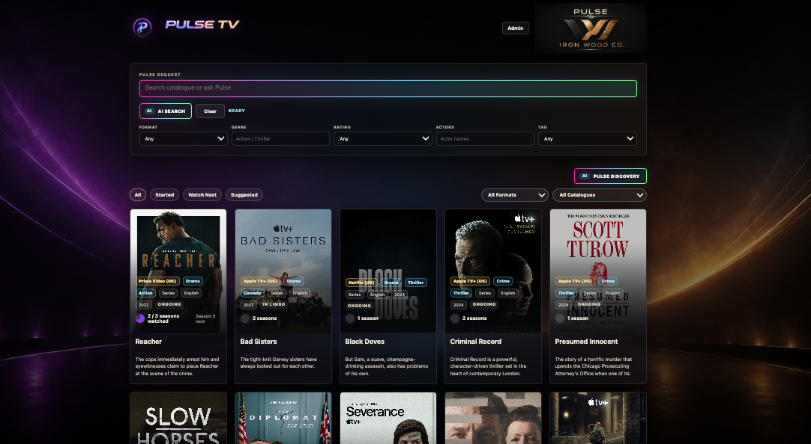

Faster decisions
Reduce endless scrolling by surfacing what actually fits the moment.
An AI-native viewing layer focused on faster selection for The Ecosystem Participant.
Pulse TV combines contextual recommendations, viewing memory, participant signals, and AI-assisted ranking into a faster way to decide what is actually worth watching.

Reduce endless scrolling by surfacing what actually fits the moment.
Mood, time available, viewing history, pacing, attention level, and participant signals all influence ranking.
Bring streaming, Plex, and local collections into a single decision layer.
Pulse TV prioritizes fit, taste, timing, and context over generic popularity.
Watch state, interest, skips, favourites, and reactions improve future surfacing over time.
Pulse TV begins as a smarter discovery surface, then evolves toward broader viewing orchestration: recommendations, launcher support, visual remote functions, shared viewing state, and AI-assisted content management.
Pulse TV should translate that into filters, ranking weights, hidden exclusions, and concise recommendation sections. Platform becomes secondary; content fit becomes primary.
Time, energy, room state, and attention level help shape what appears first.
Voice can move from broad intent to a refined shortlist without opening every service.
Repeated choices, skips, favourites, and reactions continuously improve the viewing layer.